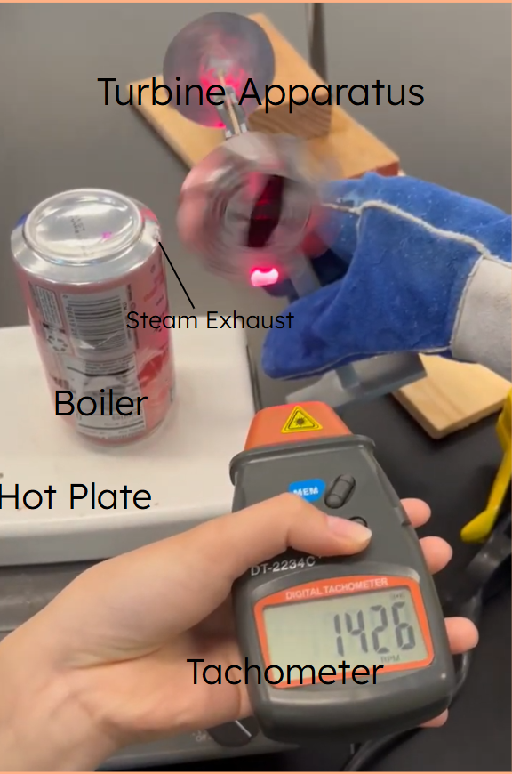
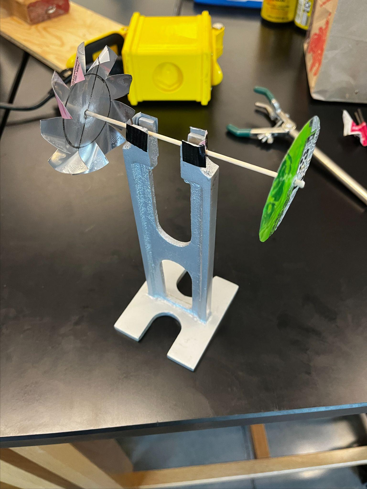

PHYSICS 223 · TEAM LAB
Steam turbine.
Building and iterating a small turbine driven by steam from an aluminum-can boiler.

THE QUESTION
Could we make a turbine spin and estimate its energy efficiency?
Our team heated about 20 mL of water in a small aluminum-can boiler. Steam leaving a hole in the can drove a constructed fan. We tried different blade arrangements and used reflective tape and a tachometer to estimate rotational speed.
We got the fan spinning and made a rough speed estimate. The tachometer did not work reliably with the setup, so we also replayed video and counted rotations manually. Blade geometry, alignment, condensation, and the direction of the steam jet all affected the result.
The data were not good enough for a defensible efficiency calculation. In particular, we could not measure the hot plate’s heat transfer into the boiler accurately; contact area, thermal resistance, and losses to the air mattered.
We worked as equal members of the lab group, sharing the tasks that needed to be done throughout the experiment and presentation.

METHOD & ITERATION
From setup to evidence.
- Build a simple boiler from an aluminum can and direct steam at the fan.
- Rework the blades and alignment until the apparatus could run.
- Use video counting when the tachometer readings were unreliable.
WHAT I TOOK AWAY
What the lab taught me.
A working prototype can still leave a measurement problem unsolved. This lab showed why defining measurable inputs matters before claiming a system efficiency.
← Back to projects